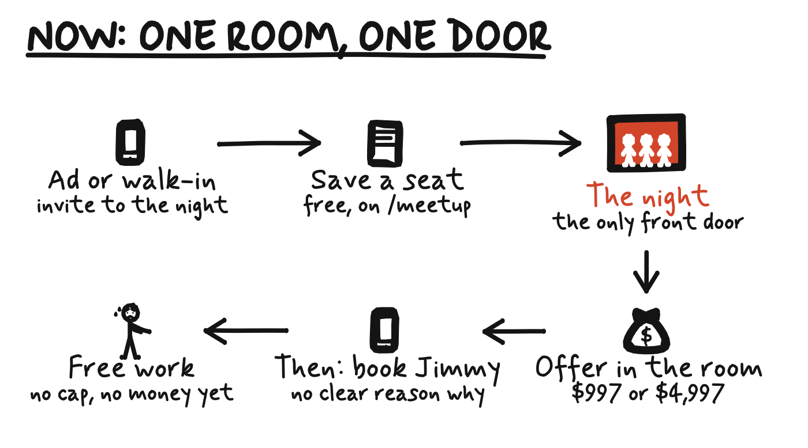
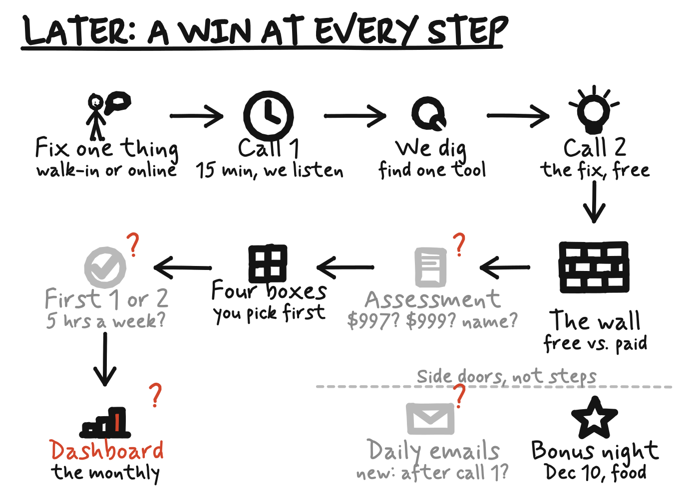
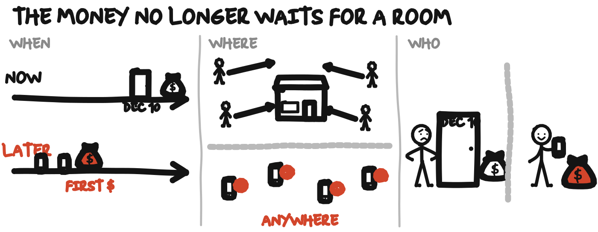
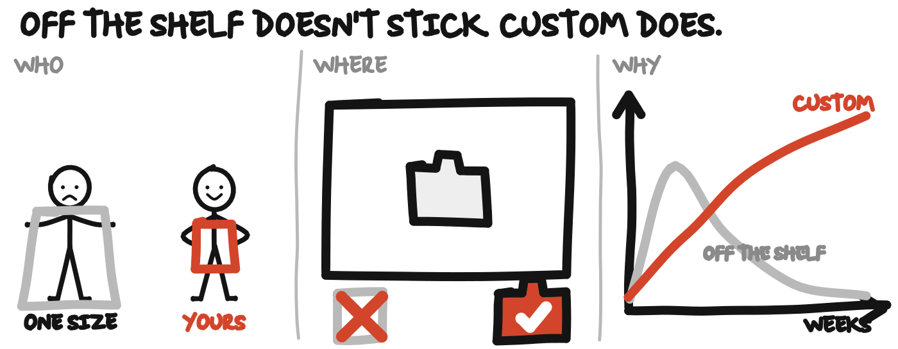
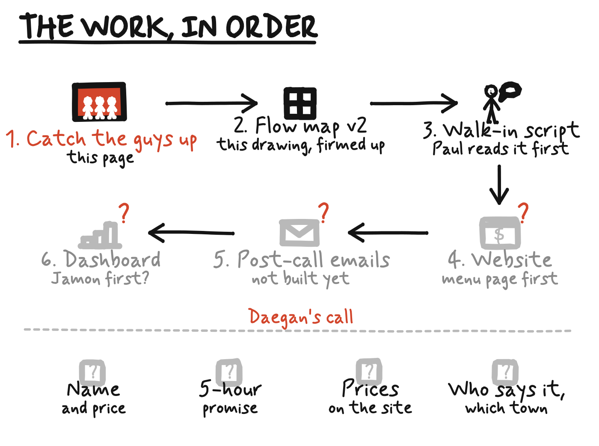

2 Guys and a Genie
2 Guys and a GenieTeam Reference · Nov 18, 2026
Where We're Taking 2 Guys
This page is the picture behind everything we're working on right now.
Read it once and you'll know what's changing, why, and what comes next.
The change, in one line:
Our first ask stops being "come to our night."
It becomes "let us fix one thing in your business."
The night stays. It just becomes a bonus.
How It Works Today
Everything Goes Through One Room.

Every road leads to the free night at Launch Fishers.
No night, no money.
And because people have to drive there, we can only reach people near Fishers.
After the night, we ask people to book Jimmy without giving them a clear reason why. Then the free help piles up with no limit.
How It Will Work
A Win At Every Step.

- We offer to fix one thing. In person, or online, where they book the 15 minutes themselves.
- Fifteen minutes on the phone. We mostly listen.
- Between the calls, Jimmy digs and finds one tool that fixes it.
- Second call: we hand them the fix, free.
- Then one honest question: "Do you know what to do, or do you want help?"
- Help starts with a paid assessment: every question about their business, every place to improve it.
- We sort everything we found into four boxes: big wins that are easy, big wins that take work, small easy ones, and what to skip. They pick what we do first.
- We start on one or two fixes. An idea on the table: if we don't save them at least five hours a week, we didn't deliver.
- Then the monthly: we keep working in their business every month. It runs on a dashboard of their own numbers, so everyone can see it working and what comes next.
The emails and the night are side doors. They feed the path. They aren't steps in it.
The night becomes a bonus for anyone in the path: meet other owners, see what's working, get help on your own business, and there's food.
Why It Matters · 1
The Money No Longer Waits For A Room.

Today the first dollar comes after the night.
In the new shape it can come after two short calls on a phone.
Why It Matters · 2
No Room Needed, So The Market Goes Everywhere.

Once the business doesn't depend on people driving to Fishers, we can advertise to small businesses anywhere in the U.S.
Honestly, anywhere they speak English.
It all happens on calls and screens, so it works for a business anywhere.
That's a far bigger market. And a free fix over the phone is an easier yes than giving up an evening, so more of the people who see an ad should become leads.
What we don't know yet: whether those leads are worth as much as local ones. They might be less qualified.
We don't have the answer from the room either. This gets us more shots at the answer, faster.
Why It Matters · 3
The Wall: Free To See, Paid To Do.

We'll show anyone what's possible, free.
If they want our hands on it, that costs money.
And it's always clear which side of the wall they're on.
Why It Matters · 4
A Win At Each Step. They Pick When To Pay.

Every step hands the owner something real before we ask for the next thing.
They move from free to paid when they're ready.
Why It Matters · 5
Off The Shelf Doesn't Stick. Custom Does.

When owners grab an AI tool off the shelf, or try it with no structure, it doesn't stick.
We learn how their business actually works first. Then we build for that business, and only that business.
That's why every client on our services page looks so different.
The Work, In Order
What We're Building Next.

- Catch the guys up. This page.
- Firm up the flow. The drawings above, made final.
- The walk-in script. A softer first hello, plus a one-page card of what to ask on the 15-minute call. Paul does the walk-ins, so he reads it first.
- The website. Starting with a menu of what we offer and how fees are worked out.
- Emails after the call. A new series for people who've done the 15 minutes. Not built yet.
- The dashboard. One real example first, likely for Jamon, our handyman client.
Still open, Daegan's call: the paid step's name and price ($997 or $999), the five-hours-a-week promise, prices on the site, and whether the script names Carmel or Fishers.